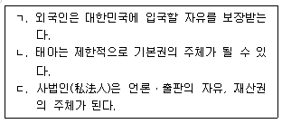
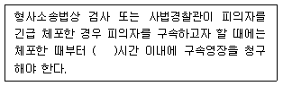
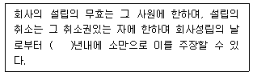
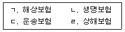
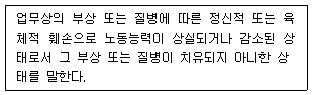
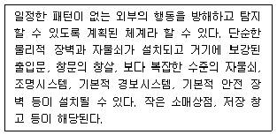
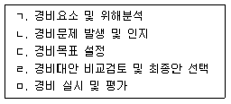

경비지도사-1차(법학개론,민간경비론) (2016-11-19 기출문제)
1과목: 법학개론
1. 법의 시간적 효력에 관한 설명으로 옳은 것은?
- 법률은 시행일을 특별히 규정하지 않는 한 공포한 날로부터 효력을 발생한다.
- 형법에서는 범죄후 법률의 변경에 의하여 형이 구법보다 경한 때에는 신법에 의한다.
- 신법우선의 원칙은 특별법이 개정되는 경우에는 적용되지 않는다.
- 신법이 시행되면 구법에 의하여 이미 발생한 기득권은 보장되지 않는다.
(정답률: 65%)

2. 관습법에 관한 설명으로 옳지 않은 것은?
- 민법은 관습법의 보충적 효력을 인정한다.
- 상법에서는 민법보다 상관습법을 우선 적용한다.
- 죄형법정주의에 따라 관습형법은 인정되지 않는다.
- 헌법재판소는 관습헌법을 인정하지 않는다.
(정답률: 51%)
3. 법의 체계에 관한 설명으로 옳지 않은 것은?
- 국가에 의하여 제정되는 법규범은 실정법에 해당한다.
- 관습법은 불문법에 해당한다.
- 헌법, 행정법, 상법 및 형사소송법 등은 공법에 속한다.
- 지방자치단체는 법령의 범위안에서 자치에 관한 규정을 제정할 수 있다.
(정답률: 64%)
4. 실체법과 절차법에 관한 설명으로 옳지 않은 것은?
- 실체법은 권리ㆍ의무의 실체적인 사항을 규정한 법이다.
- 행정심판법은 실체법에 해당한다.
- 절차법은 권리ㆍ의무의 실현을 위한 수단과 방법을 규정한 법이다.
- 부동산등기법은 절차법에 해당한다.
(정답률: 51%)
5. 법의 적용에 관한 설명으로 옳지 않은 것은?
- 법의 적용은 법원의 재판에 한정된다.
- 사실의 인정을 위하여 증거를 내세우는 것을 입증이라고 한다.
- 간주된 사실은 반증을 들어 이를 뒤집을 수 없다.
- 추정된 사실과 다른 주장을 하는 자는 반증을 들어 추정의 효과를 뒤집을 수 있다.
(정답률: 54%)
6. 법의 해석에 관한 설명으로 옳지 않은 것은?
- 법해석의 방법은 해석의 구속력 여부에 따라 유권해석과 학리해석으로 나눌 수 있다.
- 법해석의 목표는 법적 안정성을 저해하지 않는 범위 내에서 구체적 타당성을 찾는 데 두어야 한다.
- 법의 해석에 있어 법률의 입법취지도 고려의 대상이 된다.
- 민법, 형법, 행정법에서는 유추해석이 원칙적으로 허용된다.
(정답률: 57%)
7. 다음 중 지배권이 아닌 것은?
- 채권
- 소유권
- 저당권
- 저작권
(정답률: 52%)
8. 아리스토텔레스의 정의론에 관한 설명으로 옳은 것은?
- 정의는 일반적 정의와 특수적 정의로 나뉜다.
- 일반적 정의는 평균적 정의와 배분적 정의로 나뉜다.
- 평균적 정의는 상대적ㆍ실질적 평등을 의미한다.
- 배분적 정의는 절대적ㆍ형식적 평등을 의미한다.
(정답률: 44%)
9. 권리와 의무에 관한 설명으로 옳은 것은?
- 권리와 의무는 사법(私法)관계에서만 표리관계를 이룬다.
- 계약해제권은 청구권으로서 그에 대응하는 의무가 있다.
- 형성권은 청구권자의 이행청구에 대하여 이를 거절하는 형식으로 행사된다.
- 자연인과 법인은 권리와 의무의 주체가 된다.
(정답률: 58%)
10. 헌법개정절차에 관한 설명으로 옳지 않은 것은?
- 헌법개정은 국회재적의원 과반수 또는 대통령의 발의로 제안된다.
- 헌법개정안은 발의된 날부터 30일 이내에 국회 재적의원 3분의 2 이상이 찬성해야 의결된다.
- 대통령의 임기연장을 위한 헌법개정은 그 제안 당시의 대통령에 대하여는 효력이 없다.
- 헌법개정안은 국회가 의결한 후 30일 이내에 국민투표에 붙여야 한다.
(정답률: 46%)
11. 기본권의 주체에 관한 설명으로 옳은 것을 모두 고른 것은?

- ㄱ, ㄴ
- ㄱ, ㄷ
- ㄴ, ㄷ
- ㄱ, ㄴ, ㄷ
(정답률: 53%)
12. 청구권적 기본권에 관한 설명으로 옳지 않은 것은?
- 국민이 국가기관에 청원할 때에는 법률이 정하는 바에 따라 문서로 해야 한다.
- 형사피고인과 달리 형사피의자에게는 형사보상청구권이 없다.
- 군인이 훈련 중에 받은 손해에 대하여는 법률이 정하는 보상 외에는 이중배상이 금지된다.
- 재판청구권에는 공정하고 신속한 공개재판을 받을 권리뿐만 아니라 재판절차에서 진술할 권리도 포함된다.
(정답률: 63%)
13. 탄핵소추에 관한 설명으로 옳지 않은 것은?
- 대통령이 그 직무집행에 있어서 헌법이나 법률을 위배한 때에는 탄핵소추의 대상이 된다.
- 대통령에 대한 탄핵소추는 국회 재적의원 3분의 2 이상의 찬성이 있어야 의결된다.
- 대통령이 탄핵소추의 의결을 받은 때에는 국무총리, 법률이 정한 국무위원의 순서로 그 권한을 대행한다.
- 탄핵결정으로 공직으로부터 파면되면 민사상의 책임은 져야 하나, 형사상의 책임은 면제된다.
(정답률: 72%)
14. 헌법 규정상 헌법재판소가 관장하는 사항으로 옳은 것은?
- 위헌ㆍ위법명령 심사권
- 선거와 관련된 선거소송과 당선소송
- 지방자치단체 상호간의 권한쟁의심판
- 재판에 대한 헌법소원심판
(정답률: 41%)
15. 민법상 대리에 관한 설명으로 옳지 않은 것은?
- 행위능력자가 아니면 대리인이 될 수 없다.
- 대리인이 파산하면 대리권은 소멸된다.
- 불법행위에서는 대리가 인정될 수 없다.
- 복대리인은 그 권한내에서 본인을 대리한다.
(정답률: 52%)
16. 민법상 소멸시효기간이 3년인 것은?
- 의복의 사용료 채권
- 여관의 숙박료 채권
- 연예인의 임금 채권
- 도급받은 자의 공사에 관한 채권
(정답률: 56%)
17. 민법상 동산과 부동산 모두에 성립할 수 있는 물권은?
- 질권
- 유치권
- 지역권
- 지상권
(정답률: 40%)
18. 민법상 연대채무자 1인에게 생긴 사유 중 절대적 효력이 인정되는 경우가 아닌 것은?
- 상계
- 면제
- 혼동
- 시효중단
(정답률: 48%)
19. 경비원이 근무 중 과실로 행인을 다치게 한 경우, 경비업자가 행인에 대하여 지는 책임은?
- 사용자의 책임
- 채무불이행의 책임
- 도급인의 책임
- 공작물 점유자의 책임
(정답률: 54%)
20. 경비계약이 무효로 되는 경우는?
- 사기에 의해 청약의 의사표시를 한 경우
- 진의가 아닌 청약임을 알고서 승낙한 경우
- 동기의 착오로 승낙의 의사표시를 한 경우
- 계약내용의 중요부분에 착오가 있는 경우
(정답률: 51%)
21. 경비업자 甲이 乙과 체결한 경비계약상의 채무를 이행하지 않은 경우, 甲의 乙에 대한 손해배상책임에 관한 설명으로 옳지 않은 것은?
- 甲의 채무불이행으로 인한 손해배상은 통상의 손해를 그 한도로 한다.
- 甲과 乙이 행한 채무불이행에 관한 손해배상액의 예정은 이행의 청구나 계약의 해제에 영향을 미치지 않는다.
- 특별한 사정으로 인한 손해는 甲이 그 사정을 알았을 때에 한하여 배상의 책임이 있다.
- 乙에게도 과실이 있는 때에는 법원은 甲의 주장이 없더라도 손해배상의 책임 및 그 액을 정함에 이를 참작해야 한다.
(정답률: 41%)
22. 죄형법정주의의 내용이 아닌 것은?
- 소급효 금지의 원칙
- 관습형법 금지의 원칙
- 유추해석 금지의 원칙
- 상대적 부정기형 금지의 원칙
(정답률: 52%)
23. 형법에 규정된 범죄가 아닌 것은?
- 컴퓨터등 사용사기죄
- 과실손괴죄
- 직권남용죄
- 인신매매죄
(정답률: 49%)
24. 우리나라 형사소송법의 기본원리에 관한 설명으로 옳은 것은?
- 규문주의를 취하고 있다.
- 탄핵주의를 배척하고 있다.
- 국가소추주의를 취하고 있다.
- 당사자주의를 기본으로 하고 직권주의를 보충적으로 가미하고 있다.
(정답률: 40%)
25. 고소와 고발에 관한 설명으로 옳지 않은 것은?
- 피해자가 아니면 고발할 수 없다.
- 고소를 취소한 자는 다시 고소하지 못한다.
- 고소의 취소는 대리인으로 하여금 하게 할 수 있다.
- 고소와 고발은 서면 또는 구술로써 검사 또는 사법경찰관에게 해야 한다.
(정답률: 63%)
26. 다음 ( )에 들어갈 숫자로 옳은 것은?

- 12
- 24
- 48
- 72
(정답률: 59%)
27. 친고죄에 있어서 고소가 취소된 때, 법원이 행하는 재판의 종류는?
- 무죄판결
- 면소판결
- 공소기각판결
- 공소기각결정
(정답률: 48%)
28. 형사소송법상 상소에 관한 설명으로 옳지 않은 것은?
- 상고심은 원칙적으로 법률심이다.
- 법원의 결정에 불복하는 상소는 ‘항고’이다.
- 피고인을 위하여 항소한 사건에는 불이익변경금지의 원칙이 적용된다.
- 항소의 제기기간은 14일로 한다.
(정답률: 53%)
29. 상법상 주식회사에 관한 설명으로 옳지 않은 것은?
- 주식회사는 주주가 출자한 자본으로 구성되는 물적 회사이다.
- 주식은 자본을 이루는 최소의 구성단위이다.
- 주식회사의 자본은 5천만원 이상이어야 한다.
- 발행주식의 총수는 주식회사 설립등기의 기재사항이다.
(정답률: 57%)
30. 상법상 합명회사에 관한 규정이다. 다음 ( )에 들어갈 숫자로 옳은 것은?

- 1
- 2
- 3
- 4
(정답률: 40%)
31. 상법상 인보험에 해당하는 것을 모두 고른 것은?

- ㄱ, ㄴ
- ㄱ, ㄷ
- ㄴ, ㄹ
- ㄷ, ㄹ
(정답률: 65%)
32. 상법상 보험에 관한 설명으로 옳은 것은?
- 손해보험계약은 금전으로 산정할 수 있는 이익에 한하여 보험계약의 목적으로 할 수 있다.
- 보험계약은 그 계약전의 어느 시기를 보험기간의 시기로 할 수 없다.
- 보험금청구권의 소멸시효는 1년이다.
- 보험자가 파산선고를 받은 때에도 보험계약자는 계약을 해지할 수 없다.
(정답률: 47%)
33. 근로기준법의 내용으로 옳지 않은 것은?
- 사용자는 근로자를 해고하려면 해고사유와 해고시기를 서면으로 통지해야 한다.
- 사용자는 근로계약 불이행에 대한 위약금 또는 손해배상액을 예정하는 계약을 체결하지 못한다.
- 사용자로부터 부당해고를 당한 근로자는 노동위원회에 구제를 신청할 수 있다.
- 사용자가 지방노동위원회의 구제명령에 불복하여 중앙노동위원회에 재심신청을 한 경우 그 구제명령의 효력은 정지된다.
(정답률: 47%)
34. 산업재해보상보험법상 다음 설명에 해당하는 용어는? (관련 규정 개정전 문제로 여기서는 기존 정답인 2번을 누르면 정답 처리됩니다. 자세한 내용은 해설을 참고하세요.)

- 진폐
- 폐질
- 장해
- 장애
(정답률: 41%)
35. 사회보험 분야에 해당하는 법률이 아닌 것은?
- 고용보험법
- 국민연금법
- 국민건강보험법
- 국민기초생활 보장법
(정답률: 50%)
36. 사회보장기본법에 관한 내용으로 옳지 않은 것은?
- 국가와 지방자치단체는 사회보장에 관한 책임과 역할을 합리적으로 분담해야 한다.
- 국내에 거주하는 외국인은 국적을 불문하고 우리나라의 사회보장제도의 혜택을 받을 수 없다.
- 사회보장수급권은 관계 법령에서 정하는 바에 따라 다른 사람에게 양도할 수 없다.
- 사회보장수급권은 정당한 권한이 있는 기관에 서면으로 통지하여 포기할 수 있다.
(정답률: 59%)
37. 행정벌에 관한 설명으로 옳은 것은?
- 행정벌은 장래의 의무이행을 촉구하기 위한 행정상 강제집행을 말한다.
- 행정벌은 행정형벌, 행정질서벌, 행정상 직접강제로 구분된다.
- 행정질서벌은 행정법규 위반에 대하여 과태료를 부과하는 행정벌이다.
- 행정질서벌의 부과ㆍ징수는 형사소송법에 따른다.
(정답률: 41%)
38. 행정청이 타인의 법률행위를 보충하여 그 행위의 효력을 완성시켜 주는 행정 행위의 강학상 용어는?
- 인가
- 면제
- 허가
- 특허
(정답률: 46%)
39. 행정에 관한 국가의사를 결정ㆍ표시하는 권한을 가진 행정기관의 종류는?
- 행정관청
- 보좌기관
- 자문기관
- 집행기관
(정답률: 60%)
40. 행정작용 중 원칙적으로 비권력적 사실행위에 해당하는 것은?
- 공법상 계약
- 행정상 즉시강제
- 행정처분
- 행정지도
(정답률: 45%)
2과목: 민간경비론
41. 민간경비의 성장이론 중 이익집단이론에 관한 설명으로 옳은 것은?
- 그냥 내버려 두면 보호받지 못한 채로 방치될 재산 등을 민간경비가 보호한다.
- 공경비의 힘이 미치지 못하는 치안환경의 사각지대를 민간경비가 메워주어야한다.
- 정부의 비용절감을 위하여 공경비의 역할을 줄이는 대신 민간경비의 역할이 확대된다.
- 사회구성원 개개인 차원의 안전과 사유재산의 보호는 해당 개인이나 집단이 담당하여야 한다.
(정답률: 63%)
42. 민간경비의 성장이론 중 경제환원론에 관한 설명으로 옳지 않은 것은?
- 거시적 차원에서 범죄의 증가원인을 실업의 증가에서 찾는다.
- 경제침체와 민간경비 부문의 수요증가의 관계를 인과적 성격으로 보고 있다.
- 경제침체기 미국 민간경비 시장의 성장과정에 대한 경험적 관찰에 기초한 이론이다.
- 사회현상이 직접적으로 경제와 무관하더라도 발생원인을 경제문제에서 찾고자한다.
(정답률: 44%)
43. 민간경비와 공경비의 공통점에 관한 설명으로 옳은 것은?
- 특정 고객을 서비스 대상으로 하고 있다.
- 범인체포 및 범죄수사와 조사를 목적으로 하고 있다.
- 범죄예방 및 위험방지, 질서유지 업무를 수행하고 있다.
- 임무수행 시 강제력 사용에 있어 제약을 받지 않고 있다.
(정답률: 74%)
44. 우리나라 민간경비의 역할 및 업무범위로 옳지 않은 것은?
- 기계경비업무
- 신변보호업무
- 시설경비업무
- 교통유도경비업무
(정답률: 74%)
45. 민간경비와 공경비에 관한 설명으로 옳지 않은 것은?
- 민간경비원은 현행범을 영장없이 체포할 수 있다.
- 민간경비의 역할은 범죄의 예방, 진압 및 수사가 포함된다.
- 경비업자는 불특정 다수인에게 경비서비스를 제공할 의무가 없다.
- 민간경비의 목적은 사익보호이고, 공경비의 목적은 공익 및 사익보호이다.
(정답률: 70%)
46. 우리나라 민간경비산업에 관한 설명으로 옳지 않은 것은?
- 2001년 경비업법의 개정으로 기계경비업무가 허가제에서 신고제로 변경되었다.
- 우리나라의 민간경비산업은 1986년 아시안게임, 1988년 서울올림픽, 1993년 대전엑스포를 계기로 급성장하였다.
- 1970년대 후반부터 일부 업체는 미국이나 일본 등지에서 방범기기를 구입하거나 종합적인 경비시스템 구축을 위한 노하우를 도입하였다.
- 우리나라의 민간경비산업은 양적 팽창을 이뤄냈지만 인력경비 중심의 영세한 경호ㆍ경비업체의 난립으로 민간경비의 발전에 걸림돌로 작용하고 있다.
(정답률: 43%)
47. 우리나라 민간경비에 관한 설명으로 옳지 않은 것은?
- 1999년에 용역경비업법을 경비업법으로 법률명을 변경하였다.
- 민간경비서비스 제공 주체가 되려는 자는 관할관청에 신고하여야 한다.
- 1978년 내무부장관의 승인으로 사단법인 한국용역경비협회가 설립되었다.
- 경찰은 사회 전반의 범죄대응역량을 강화하기 위해 민간경비업을 적극적으로 지도ㆍ육성하고 있다.
(정답률: 55%)
48. 우리나라 민간경비산업 현황에 관한 설명으로 옳지 않은 것은?
- 청원경찰 제도는 외국에서는 보기 어려운 특별한 제도이다.
- 민간경비업의 경비인력 및 업체 수가 일부 지역에 편중되어 있다.
- 비용절감 등의 효과로 인하여 자체경비보다 계약경비가 발전하고 있다.
- 경비회사의 수나 인원 면에서 아직까지 기계경비에 대한 의존도가 높다.
(정답률: 75%)
49. 각국의 민간경비 발전과정에 관한 설명으로 옳지 않은 것은?
- 일본은 경비업법 제정 당시에는 신고제로 운영되었다가 1982년 허가제로 바뀌었다.
- 한국은 청원경찰법, 용역경비업법이 제정되어 제도적인 발전의 기틀을 마련하였다.
- 일본은 1972년에 경비업법을 제정하여 민간경비의 규제보다는 보호 및 자율적 성장을 위한 계기를 마련하였다.
- 미국연방정부는 서부개척시대에 철도경찰법을 제정하여 일정한 구역 내에서 경찰권한을 부여한 민간경비조직을 설치하였다.
(정답률: 46%)
50. 각국의 민간경비제도 발전에 관한 설명으로 옳지 않은 것은?
- 미국에서 항공교통량의 급증에 따른 항공기납치는 민간경비산업의 성장에 영향을 끼쳤다.
- 한국은 청원경찰과 민간경비 간 지휘체계, 신분보장 등 이원화와 관련된 문제가 대두되고 있는 실정이다.
- 일본과 한국은 국가가 관리ㆍ규제하는 공인탐정제도를 도입하기 위한 입법적 노력을 지속적으로 펼치고 있다.
- 미국에서 19세기말 유럽사회의 사회주의, 무정부주의의 영향을 받은 노동자운동은 민간경비산업의 발달에 영향을 주었다.
(정답률: 62%)
51. 미국의 민간경비 발전과정에 관한 설명으로 옳지 않은 것은?
- 철도경찰의 설립과 민간경비의 발전에 큰 역할을 한 사람은 헨리 필딩(Henry Fielding)이다.
- 제1차 세계대전 직전까지의 산업화ㆍ도시화에 따른 산업시설 보호와 스파이방지를 위하여 자본가들의 민간경비 수요가 증가하였다.
- 제2차 세계대전 이후에는 군사, 산업시설의 안전보호와 군수물자 및 장비 또는 기밀 등의 보호를 위한 경비 수요의 증가가 민간경비 발전의 토대가 되었다.
- 1800년대 서부지역 개발과 관련하여 철도가 운행되고, 철도는 사람들이 거주하지 않는 불모지를 통과하는 경우가 많아 민간경비산업이 발전하였다.
(정답률: 71%)
52. 핑커톤(Allan Pinkerton)에 관한 설명으로 옳지 않은 것은?
- 위폐사범 일당을 검거하는데 결정적 공헌을 하여 부보안관으로 임명되었다.
- 범죄자를 유형별로 정리하여 프로파일링(profiling) 수사기법의 전형을 세웠다.
- 1858년에 최초의 경보회사(Central-Station Burglar Alarm Company)를 설립하였다.
- 경찰당국의 자료요청에 응하여 경찰과 민간경비업체의 바람직한 관계를 정립하였다.
(정답률: 66%)
53. 계약경비와 비교하여 자체경비의 장점으로 옳지 않은 것은?
- 이직률이 낮은 편이다.
- 자질이 우수한 사람들이 지원한다.
- 인사관리 및 행정관리가 용이하다.
- 경비원 등에 대한 통제를 강화할 수 있다.
(정답률: 61%)
54. 경비원에 의한 경비 등과 같이 단일 예방체제에 의존하는 경비형태는?
- 1차원적 경비
- 단편적 경비
- 반응적 경비
- 총체적 경비
(정답률: 64%)
55. 인력경비와 비교하여 기계경비의 장점으로 옳지 않은 것은?
- 인명피해를 예방할 수 있다.
- 장기적으로 비용 절감효과를 가져올 수 있다.
- 잠재적인 범죄자 등에 대해 경고효과가 크다.
- 상황발생 시 현장에서 신속하게 대응할 수 있다.
(정답률: 75%)
56. 민간경비조직의 운영원리로 옳지 않은 것은?
- 일반화의 원리
- 명령통일의 원리
- 계층제의 원리
- 조정ㆍ통합의 원리
(정답률: 59%)
57. 교통유도경비에 관한 설명으로 옳지 않은 것은?
- 일본의 경우 민간경비원이 실시하는 교통유도경비업무는 경찰관이 실시하는 교통정리와 마찬가지로 법적 강제력이 있다.
- 교통유도경비업무란 도로에 접속한 공사현장 및 사람과 차량의 통행에 위험이 있는 장소 또는 도로를 점유하는 행사장에서 부상 등 사고발생을 방지하는 업무이다.
- 일본 경비업법에서 정의하고 있는 경비업무 중에는 ‘사람 혹은 차량의 혼잡한 장소와 통행에 위험이 있는 장소에서의 부상 등의 사고 발생을 경계하여 방지하는 업무’를 포함한다.
- 미국의 교통유도원(flagger)제도는 각 주에서는 다양한 방법 및 기관을 통해 교육과정을 개설하고 있으며, 일부 주에서는 필기 및 실기시험을 통과한 후 인증서를 발급하여 유도원 채용 시 반드시 인증서를 제출하도록 하는 등 체계적으로 관리하고 있다.
(정답률: 62%)
58. 다음에 해당하는 경비중요도에 따른 분류는?

- 최저수준 경비(Level Ⅰ)
- 하위수준 경비(Level Ⅱ)
- 중간수준 경비(Level Ⅲ)
- 상위수준 경비(Level Ⅳ)
(정답률: 71%)
59. 경비위해요소의 분석단계로 옳은 것은?
- 위해요소 인지 → 위해요소 손실발생 예측 → 위해정도 평가 → 비용효과분석
- 위해요소 손실발생 예측 → 위해요소 인지 → 위해정도 평가 → 비용효과분석
- 위해요소 인지 → 위해요소 손실발생 예측 → 비용효과분석 → 위해정도 평가
- 위해요소 손실발생 예측 → 위해요소 인지 → 비용효과분석 → 위해정도 평가
(정답률: 59%)
60. 경비업법상 경비원의 교육에 관한 설명으로 옳지 않은 것은?
- 경비원이 되려는 사람은 교육기관에서 미리 일반경비원 신임교육을 받을 수 있다.
- 일반경비원의 교육 시 관할경찰서 소속 경찰공무원이 교육기관에 입회하여 지도ㆍ감독하여야 한다.
- 특수경비업자는 특수경비원 신임교육을 받지 아니한 자를 특수경비업무에 종사하게 하여서는 아니 된다.
- 경비업자는 경비업무를 적정하게 실시하기 위하여 경비원으로 하여금 경비원 신임교육 및 직무교육을 받게 하여야 한다.
(정답률: 68%)
61. 민간경비원의 법적 지위와 권한에 관한 설명으로 옳지 않은 것은?
- 민간경비원은 정당방위나 자구행위를 할 수 있다.
- 민간경비원의 법적 지위는 일반시민과 같은 사인(私人)에 불과하다.
- 특수경비원은 인질ㆍ간첩 또는 테러사건에 있어서 은밀히 작전을 수행하는 부득이한 경우에는 경고 없이 소총을 발사할 수 있다.
- 특수경비원은 배치된 기관ㆍ시설 또는 사업장 등의 구역을 관할하는 지방경찰청장의 감독을 받아 그 경비구역만의 경비를 목적으로 경찰관 직무집행법에 따른 경찰관의 권한을 행사한다.
(정답률: 65%)
62. 비상사태 발생 시 민간경비원의 역할에 관한 설명으로 옳지 않은 것은?
- 출입구와 비상구의 출입을 통제(control)하여야 한다.
- 비상인력과 경비대상시설 밖의 이동을 통제(control)하여야 한다.
- 보호할 가치가 있는 자산에 대하여 보호조치를 실시하여야 한다.
- 장애인 등 특별한 대상의 보호 및 응급조치를 실시하여야 한다.
(정답률: 53%)
63. 화재의 분류와 표시색상의 연결이 옳은 것은?
- 유류화재 - 황색
- 가스화재-청색
- 전기화재-백색
- 금속화재-적색
(정답률: 65%)
64. CCTV에 관한 설명으로 옳지 않은 것은?
- 다수의 장소를 관찰할 수 있다.
- 보이지 않는 영역을 관찰할 수 있다.
- 다수인에 의한 동시관찰을 할 수 있다.
- 환경이 열악하거나 근접이 가능한 장소만 관찰할 수 있다.
(정답률: 75%)
65. 외곽경비에 관한 설명으로 옳지 않은 것은?
- 배기관, 맨홀뚜껑은 경비계획에 포함시킬 필요가 없다.
- 비상시에만 사용하는 문은 평상시에는 잠겨 있어야 한다.
- 상품판매시설은 직원용 출입구와 고객용 출입구를 구분하는 것이 좋다.
- 일정기간 동안 또는 비상시에만 사용하는 문의 잠금장치는 특수하게 만들어야한다.
(정답률: 78%)
66. 외곽경비에 관한 설명으로 옳지 않은 것은?
- 자연적인 장벽에는 강, 절벽 등이 해당된다.
- 담장 위에 철조망을 설치하면 방범효율이 증대된다.
- 외곽경비는 장벽, 출입구, 건물 자체 순으로 수행된다.
- 경계구역 내에서는 가시지대를 넓히기 위해 모든 장애물을 제거할 필요는 없다.
(정답률: 80%)
67. 경비계획 수립의 순서로 옳은 것은?

- ㄱ - ㄴ-ㄷ -ㄹ- ㅁ
- ㄴ- ㄷ -ㄱ -ㄹ - ㅁ
- ㄷ - ㄱ-ㄴ -ㄹ- ㅁ
- ㄷ- ㄴ -ㄹ -ㄱ - ㅁ
(정답률: 64%)
68. 비상계획서에 포함되어야 할 사항으로 옳지 않은 것은?
- 명령지휘부의 지정
- 외부기관과의 통신수단 마련
- 대중 및 언론에 대한 정보 차단
- 비상시 사용될 장비ㆍ시설의 위치 지정
(정답률: 76%)
69. 정보보호의 기본원칙 중 윤리성에 관한 설명은?
- 정보시스템 소유자와 공급자의 책임을 명확하게 해야 한다.
- 정보시스템보안은 정보의 합법적 사용 및 전달과 상호조화를 이루도록 해야 한다.
- 정보와 정보시스템의 사용을 허가받은 사람이 언제든지 사용할 수 있도록 보장해야한다.
- 정보시스템과 정보시스템의 보안은 타인의 권리와 합법적 이익이 존중 보호될 수 있도록 사용되어야 한다.
(정답률: 58%)
70. 컴퓨터범죄의 특징으로 옳은 것은?
- 범죄행위자의 고령화 경향
- 범죄행위의 증명 용이
- 범죄행위의 단발성
- 범죄행위자의 초범성
(정답률: 64%)
71. 컴퓨터범죄 예방을 위한 법적 안전대책은?
- 시스템 백업
- 침입차단시스템
- 스케줄러 점검
- 컴퓨터 스파이에 대한 처벌
(정답률: 68%)
72. 문자메시지(SMS)와 피싱(phishing)의 합성어로 ‘무료쿠폰 제공, 돌잔치 초대장, 모바일 청첩장’ 등을 내용으로 하는 문자메시지 내의 인터넷 주소를 클릭하면 악성코드가 스마트폰에 설치되어 피해자가 모르는 사이에 소액결제 피해 발생 또는 개인의 금융정보를 탈취하는 신종금융범죄수법은?
- 스미싱(smishing)
- 메모리 해킹(memory hacking)
- 파밍(pharming)
- 보이스피싱(voice phishing)
(정답률: 76%)
73. 어떤 조건을 넣어주고 그 조건이 충족될 때마다 자동으로 불법행위가 이루어지도록 하는 것으로 컴퓨터의 일정한 사항이 작동시마다 부정행위가 일어날 수 있도록 프로그램을 조작하는 컴퓨터범죄 수법은?
- 트로이 목마(trojan horse)
- 데이터 디들링(data diddling)
- 논리폭탄(logic bomb)
- 살라미 기법(salami techniques)
(정답률: 55%)
74. 우리나라 민간경비산업의 문제점으로 옳지 않은 것은?
- 경비업체의 영세성
- 경비원의 낮은 이직률
- 청원경찰과 민간경비의 이원적 운영
- 청원경찰에 비해 민간경비원의 직업적 안정성 확보의 어려움
(정답률: 77%)
75. 경찰과 민간경비의 상호협력방안에 관한 설명으로 옳지 않은 것은?
- 지역방범 및 정보교환 네트워크 구축
- 관련 전문지식, 교육훈련 등의 지속적 교환
- 지휘ㆍ감독 강화를 통한 수직적 관계의 유지
- 민간경비의 오경보(false alarm) 감소를 위한 상호노력
(정답률: 73%)
76. 민간경비와 경찰의 차이점으로 옳은 것은?
- 전달조직: 민간경비는 정부, 경찰은 정부 및 영리기업
- 권력: 민간경비는 권력 보유, 경찰은 원칙적 권력 미보유
- 권한의 근거: 민간경비는 위탁자의 사권(私權), 경찰은 통치권
- 역할: 민간경비는 범죄예방 및 범죄진압, 경찰은 범죄예방 및 손실예방
(정답률: 68%)
77. 우리나라 민간경비산업의 발전방안 및 전망으로 옳지 않은 것은?
- 경비원의 적정 임금을 보장하여야 한다.
- 경찰과 민간경비원의 합동순찰제도를 도입하여야 한다.
- 지역적 특성을 고려한 민간경비 상품을 개발하여야 한다.
- 기계경비산업보다 인력경비산업의 성장속도가 훨씬 빠를 것이다.
(정답률: 70%)
78. 미국의 경찰과 민간경비원의 관계에 관한 설명으로 옳지 않은 것은?
- 범죄예방 활동을 위하여 상호 간 긴밀한 협조관계를 유지하고 있다.
- 경비원 선발을 위한 배경조사에 있어서 상호협력이 되고 있지 않다.
- 주(州)마다 차이는 있지만 경찰관 신분으로 민간경비회사에서 part-time job을 하기도 한다.
- 주(州)마다 차이는 있지만 경찰과 민간경비원 상호 간에 보수, 신분상의 차이를 느끼지 않는다.
(정답률: 70%)
79. 경찰방범활동의 장애요인으로 옳지 않은 것은?
- 경찰인력의 부족
- 민간경비업체의 증가
- 타 부처의 업무협조 증가
- 경찰관의 민생안전 부서 근무 기피
(정답률: 67%)
80. 경비조명에 관한 설명으로 옳지 않은 것은?
- 조명시설의 위치가 경비원의 시야를 방해해서는 안 된다.
- 보안조명은 타인의 사생활을 방해하도록 설치되어서는 안 된다.
- 석영등은 노란 빛을 내며 매우 강한 빛을 방출하여 안개 발생지역에서도 식별 가능하도록 할 수 있는 등이다.
- 프레이넬등은 넓은 폭의 빛을 내는 조명등으로서 비교적 어두운 시설물에 침입을 감시하는 경우 유용하게 사용되는 등이다.
(정답률: 61%)